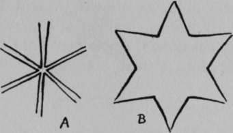
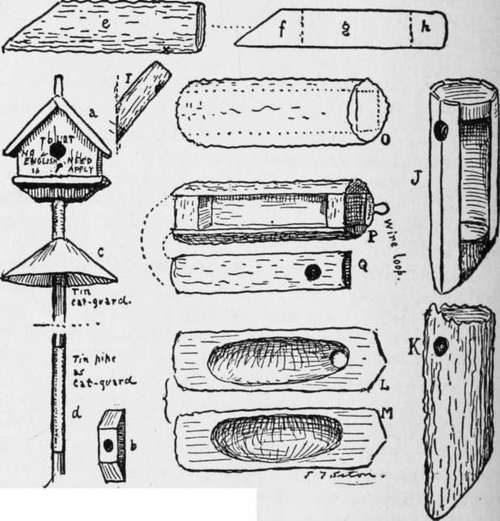

Bird Boxes Or Houses
Description
This section is from the book "The Book Of Woodcraft", by Ernest Thompson Seton. Also available from Amazon: The Book of Woodcraft.
Bird Boxes Or Houses
A good line of winter work is making bird boxes to have them ready for the spring birds.
Two styles of bird houses are in vogue; one a miniature house on a pole, the other is an artificial hollow limb in a tree.
First - the miniature cabin or house on a pole. This is very good for martins, swallows, etc., and popular with most birds, because it is safest from cats and squirrels. But most of us consider it far from ornamental.
To make one, take any wooden box about six inches square put a wooden roof on it (a in cut), then bore a hole in the middle of one end, making it one and one half inches wide; and on the bottom nail a piece of two-inch wood with an inch auger hole in it (b). Drive in a nail for a perch below the door and all is ready for a coat of soft, olive-green paint. After this is dry, the box is finished. When you set it in place, the end of the pole is shaved to fit tight into the auger hole in the bottom, and the pole then set up, or fastened to the end of the building. In the latter case a six or eight foot pole is long enough. In some neighborhoods it is necessary to put tin as a cat and rat guard, on the pole, as shown (c and d). Some elaborate these bird houses, making a half dozen compartments. When this is done the pole goes right through the lowest floor and fits into a small hole in the floor above.
These large apartment houses are very popular with the purple martin, as well as with the English sparrow if they are set up in town.
Alexander Wilson tells us that the Choctaw and Chicasaw Indians used to make bird houses for the purple martins thus: "cut off all the top branches from a sapling, near their cabins, leaving the prongs a foot or two in length, on each of which they hang a gourd, or calabash properly hollowed out for their convenience".
But the wild-wood box or hollow limb is more sightly and for some birds more attractive. There are several ways of using the natural limb. One is, take a seven or eight inch stick of chestnut about twenty inches long, split four slabs off it: (0) then saw off three inches of each end of the "core " and nail the whole thing together again (P and Q), omitting the middle part of the core.
Another way is to split the log in half and scoop out the interior of each half (L and M). When nailed together again it makes a commodious chamber, about five inches wide and a foot or more deep.
Another plan is: Take a five-inch limb of green chestnut, elm, or any other tough-barked tree. cut a piece eighteen inches long, make a long bevel on one end (e). Now carefully split the bark on one side and peel it. Then saw the peeled wood into three pieces (f g h), leave out g and put the bark on again. Cut a hole in the bark on the longest side, at the place farthest from the beveled end (x in e), and your bird nest is finished. The beveled end is there to make it easily nailed up; when in place, it is as at I. The front - that is, the side where the door is - should always be the under one; and the door in each case should be near the top.
But these methods presuppose a fine big stick of wood. I have more often found it convenient to work with scraps.
Here is one easy way that I have long used: From a four or five inch round log saw off two sections each two inches thick, or failing a log, cut out two circles from a two-inch plank, for top and bottom parts (like f and h); then using six or seven laths instead of bark, make a hollow cylinder (J). Cover the hollow cylinder with a large piece of bark and cut the hole (K). Cut your entry at the top, half on each of a pair of laths. Cover the whole thing with bark nailed neatly on; or failing the bark, cover it with canvas and paint a dull green mottled with black and gray.
This last has the advantage of giving most room in a small log. Of course, if one can find a hollow limb, all this work is saved. By way of variety this one can be put up hanging from a nail, for which the wire loop is made.
To a great extent the size of hole regulates the kind of bird, as most birds like a tight fit.
For wrens make it about one inch; for bluebirds, and tree-swallows one and one half inches; for martins two and one half inches.
For latest ideas send to The Jacobs Bird House Company, 404 So. Washington Street, Waynesburg, Pa.
See also the "Making of a Hollow Tree," By E. T. Seton, Country Life in America, November, 1908, and seq.
"Putting up Bird Boxes," By B. S. Bowdish (special leaflet), Audubon Society, 141 Broadway, New York. 15 cents per dozen.
"Useful Birds and Their Protection," By E. H. Forbush, Massachusetts State Board Agriculture, p. 388.
How To Raise Some Money
A good Scout always " travels on his own steam." When you want to go camping, don't go round begging for the cash, but earn it. And a good time to do this is in the winter when you are forced to stay indoors.
How? One way, much in the line of our work, is making some bird houses. I know a number of persons who would gladly put up bird houses, if they could get them easily. See article on Bird Houses.
You can either sell them in a lot to a man who has already a shop for garden stuff or hardware, or put them on a hand cart and sell them at much better prices yourself. It is useless to take them to a farmer, or to folks in town, but a ready sale will be found among the well-to-do in the suburbs, in a country town, or among the summer residents of the country. The simple boxes might fetch 50 cents each, the more elaborate $1.00 or $2.00 according to the labor they have cost you.
Another way is the manufacture of Indian stuff such as furniture, birch-bark boxes, baskets, rustic seats, etc., as described elsewhere in the book. See index.
Continue to:
Tags
bookdome.com, books, online, free, old, antique, new, read, browse, download